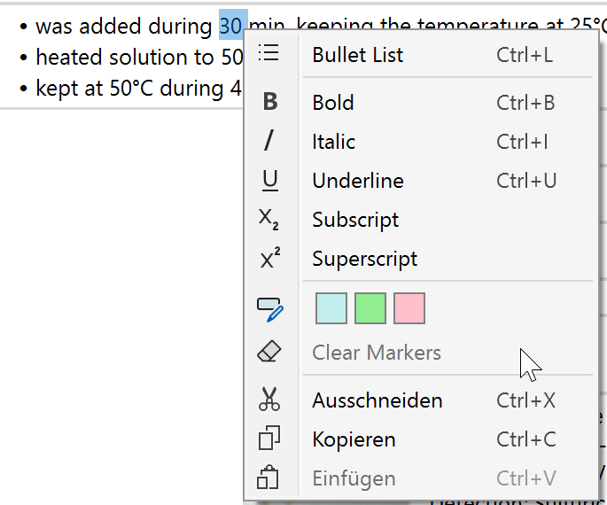
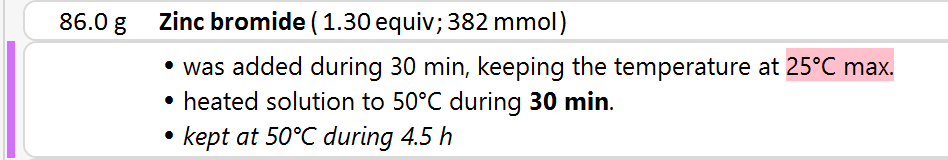

4) Add Comments
Of course we also need to add text to the protocol to describe our conditions, timings and observations wherever approriate. So let's add a Comment protocol element via the Protocol Toolbar:

After clicking the Add Comment button, the protocol should look like below:
|
Tip: In above example, the new comment was appended to the end of the protocol. However, as any other protocol element, it also can be inserted below the currently selected protocol element. Just check the Insert checkbox of the Protocol Toolbar before the addition. Moreover, all protocol elements also can be rearranged via drag & drop (see here). |
The Comment protocol element lets you enter formatted multi-line text. The formatting options are accessible via its context menu or directly via its keyboard shortcuts:

Thus, a typical comment might look like below. Note how a bullet list can visualize a multi-step sequence in a concise and easy to read manner.
